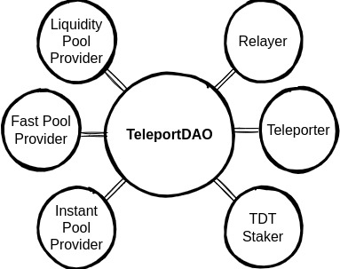

Participants
Introduction#
TeleportDAO has six main participants: relayers, teleporters, liquidity pool providers, fast pool providers, instant pool providers, and TDT stakers.

Relayers#
Relayers get data from the source chain and submit them on the target chain. Then, the relay smart contract checks the correctness of the submitted data and sends rewards to the relayer who provided the valid data faster. Anyone can become a relayer in TeleportDAO and compete to collect rewards that are paid in TDT. As long as one honest relayer exists in the system, users can perform cross-chain transfers and cross-chain exchanges successfully.
Teleporters#
To create a better user experience, we introduce teleporters. Teleporters are parties who transfer users' cross-chain transfer and cross-chain exchange requests to the target chain. So users can perform cross-chain settlements by only interacting with the source chain. Teleporters receive fees in return for the service they provide. Anyone can become a Teleporter in TeleportDAO. As long as one honest Teleporter exists in the system, users can perform cross-chain transfers and cross-chain exchanges successfully.
Liquidity Pool Providers#
These parties provide liquidity for liquidity pools of TeleportDAO. Anyone can become a liquidity pool provider and receive a portion of exchange fees in reward.
Fast Pool Providers#
These parties provide liquidity for fast pools of TeleportDAO. Anyone can become a fast pool provider and receive a portion of fast settlement fees in reward.
Instant Pool Providers#
These parties provide liquidity for instant pools of TeleportDAO. Anyone can become an instant pool provider and receive a portion of instant settlement fees in reward.
TDT Stakers#
Users can stake their TDT in TeleportDAO. After staking TDT, they can participate in TeleportDAO governance, receive a portion of protocol fees, and perform instant settlements.